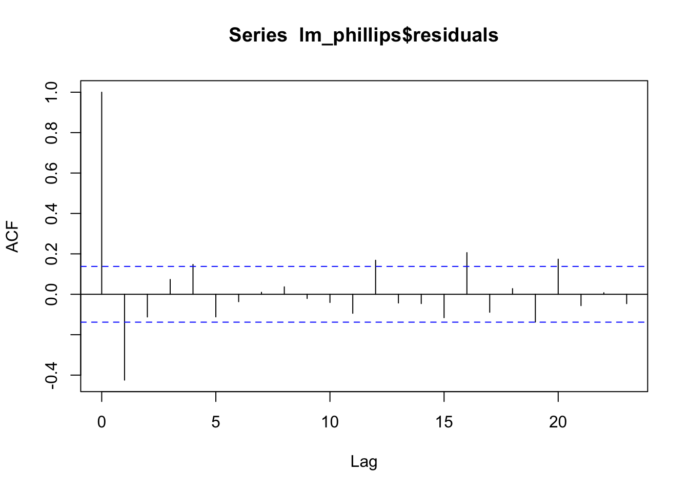

\(I_t\) is the inflation rate; \(\Delta I_t = I_t - I_{t-1}\) is the first difference of the inflation rate;
\(u_t\) is the unemployment rate;
\(\varepsilon_t\) is the error term.
We remove the first two quarters due to missing value in the first observation and the change in the rate of inflation.
Regression result for OLS.
lm_phillips <-lm(delta_infl ~ unemp, data = data %>%tail(-2))stargazer(lm_phillips, type ="html", title ="Phillips Curve Regression",notes ="<span>*</span>: p<0.1; <span>**</span>: <strong>p<0.05</strong>; <span>***</span>: p<0.01 <br> Standard errors in parentheses.",notes.append = F)
Phillips Curve Regression
Dependent variable:
delta_infl
unemp
-0.090
(0.126)
Constant
0.492
(0.740)
Observations
202
R2
0.003
Adjusted R2
-0.002
Residual Std. Error
2.822 (df = 200)
F Statistic
0.513 (df = 1; 200)
Note:
*: p<0.1; **: p<0.05; ***: p<0.01 Standard errors in parentheses.
Figure 5.1: Phillips Curve Deviations from Expected Inflation
Figure 5.1 shows striking negative autocorrelation. The correlogram tells the same story (Figure 5.2). The blue dotted lines give the values beyond which the autocorrelations are (statistically) significantly different from zero.
acf(lm_phillips$residuals, type='correlation')

Figure 5.2: Correlogram of the residuals
We can get the autocorrelation coefficients by setting plot = FALSE
Now we test the serial correlation of the residuals by regressing \(\varepsilon_t\) on \(\varepsilon_{t-1}\).
\[
\varepsilon_t = \phi\varepsilon_{t-1} + e_t
\]
res <-tibble(res_t = lm_phillips$residuals,res_t1 =lag(lm_phillips$residuals))lm_res <-lm(res_t ~ res_t1, data = res)summary(lm_res)
Call:
lm(formula = res_t ~ res_t1, data = res)
Residuals:
Min 1Q Median 3Q Max
-9.8694 -1.4800 0.0718 1.4990 8.3258
Coefficients:
Estimate Std. Error t value Pr(>|t|)
(Intercept) -0.02155 0.17854 -0.121 0.904
res_t1 -0.42630 0.06355 -6.708 2e-10 ***
---
Signif. codes: 0 '***' 0.001 '**' 0.01 '*' 0.05 '.' 0.1 ' ' 1
Residual standard error: 2.531 on 199 degrees of freedom
(1 observation deleted due to missingness)
Multiple R-squared: 0.1844, Adjusted R-squared: 0.1803
F-statistic: 44.99 on 1 and 199 DF, p-value: 2.002e-10
The regression of the least squares residuals on their past values gives a slope of -0.4263 with a highly significant \(t\) ratio of -6.7078. We thus conclude that the residuals in this models are highly negatively autocorrelated.
5.3 Test for Serial Correlation
Durbin-Watson (DW) test for AR(1)
Breusch-Godfrey test for AR(q)
library(lmtest)dwtest(lm_phillips, alternative ="two.sided") # Durbin Watson test
Durbin-Watson test
data: lm_phillips
DW = 2.8276, p-value = 5.212e-09
alternative hypothesis: true autocorrelation is not 0
bgtest(lm_phillips, order=1) # Breusch-Godfrey test
Breusch-Godfrey test for serial correlation of order up to 1
data: lm_phillips
LM test = 36.601, df = 1, p-value = 1.45e-09
Both tests show strong evidence of AR(1) serial correlation in the errors.
5.4 Consequence for Serial Correlation
The presence of autocorrelation can lead to misleading results as they violate the assumptions of least squares.
The least squares estimator is still a linear unbiased estimator, but is no longer best.
One consequence of the serial correlated errors is that the standard error and \(t\) statistics are not valid anymore. In the case if serial correlation, you can either
Transform the model to remove the serial correlation, or alternatively,
FGLS (Feasible Genralized Least Squares), transform the original equation using, e.g., Cochrane-Orcutt or Prais-Winsten transformation.
This approach assumes strictly exogeneous regressors, that is, no lagged \(y\) in the RHS of the equation. See Chapter 12.3 in Wooldridge (2013), Introductory Econometrics: A Modern Approach.
Use serial correlation-robust standard errors
HAC (Heteroskedasticity and autocorrelation consistent) standard errors or Newey-West standard errors.
Infinite Distributed Lag Models
Geomoetric (or Koyck) and Rational Distributed Lag Models.
References
Ex. 12.3, Chap 12 Serial Correlation, Econometric Analysis, Greene 5th Edition, pp 251.